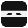

<!doctype html>
<html lang="en">
<meta charset="utf-8">
<meta name="viewport" content="width=device-width, initial-scale=1">
<title>Kage</title>
<style>
  :root {
    --ink: #161616; --muted: #6b6b6b; --line: #d6d6d6; --ground: #fafafa; --field: #fff;
    --ok: #15803d; --warn: #c2410c; --space: 12px; --radius: 6px;
    --font: ui-sans-serif, system-ui, -apple-system, "Segoe UI", sans-serif;
    --mono: ui-monospace, "JetBrains Mono", SFMono-Regular, Menlo, monospace;
  }
  @media (prefers-color-scheme: dark) {
    :root { --ink: #ececec; --muted: #9a9a9a; --line: #333; --ground: #121212; --field: #1b1b1b; --ok: #4ade80; --warn: #fb923c; }
  }
  * { box-sizing: border-box; }
  body { margin: 0; min-width: 320px; font: 13px/1.5 var(--font); color: var(--ink); background: var(--ground); }
  main { max-width: 32rem; margin: 0 auto; padding: calc(var(--space) * 1.5); }
  header { display: flex; align-items: center; gap: var(--space); margin-bottom: var(--space); }
  header img { width: 28px; height: 28px; }
  h1 { margin: 0; font-size: 15px; font-weight: 600; }
  .state { display: flex; align-items: center; gap: 8px; padding: 10px var(--space); border: 1px solid var(--line); border-radius: var(--radius); }
  .dot { width: 8px; height: 8px; border-radius: 50%; background: var(--muted); flex: none; }
  .state[data-state="connected"] .dot { background: var(--ok); }
  .state[data-state="refused"] .dot, .state[data-state="unreachable"] .dot, .state[data-state="no-token"] .dot { background: var(--warn); }
  .hint { color: var(--muted); margin: 6px 0 0; }
  form { margin-top: calc(var(--space) * 1.5); display: grid; gap: var(--space); }
  label { display: grid; gap: 4px; color: var(--muted); }
  input { width: 100%; padding: 7px 9px; font: 12px var(--mono); color: var(--ink); background: var(--field); border: 1px solid var(--line); border-radius: var(--radius); }
  input:focus-visible, button:focus-visible { outline: 2px solid var(--ink); outline-offset: 1px; }
  .error { margin: 0; color: var(--warn); font-size: 12px; }
  .error:empty { display: none; }
  button { justify-self: start; padding: 7px 14px; font: inherit; color: var(--ground); background: var(--ink); border: 0; border-radius: var(--radius); cursor: pointer; }
  button:disabled { opacity: .5; cursor: default; }
  footer { margin-top: calc(var(--space) * 1.5); color: var(--muted); font-size: 12px; }
  code { font: 12px var(--mono); }
</style>
<main>
  <header><h1>Kage</h1></header>
  <div class="state" id="state" data-state="" role="status" aria-live="polite"><span class="dot"></span><span id="state-text">Checking…</span></div>
  <p class="hint" id="state-hint"></p>
  <form id="form" novalidate>
    <label>Token
      <input id="token" type="password" autocomplete="off" spellcheck="false" placeholder="from kage add browser">
    </label>
    <label>Hub address
      <input id="hub" spellcheck="false" placeholder="http://127.0.0.1:8791">
    </label>
    <p class="error" id="error"></p>
    <button id="save" type="submit">Save</button>
  </form>
  <footer>Kage reads your tabs only when you ask it in Slack. Sites in <code>KAGE_BROWSER_BLOCK</code> never reach it.</footer>
</main>
<script src="options.js"></script>
</html>
